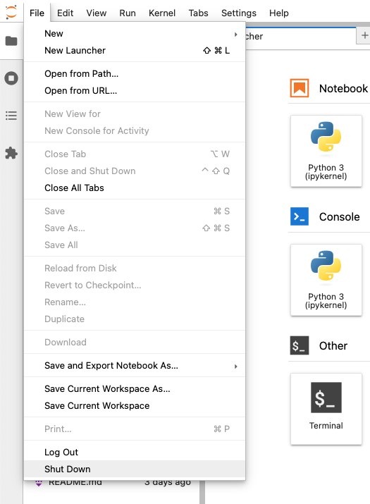

# this will display the number "2" once the cell is executed
1 + 12Welcome to the first hands-on section of the course where you will familiarise yourself with Jupyter Lab for running Python ‘Notebooks’.
This guide assumes the prior installation of Anaconda as detailed previously.
Create a new “environment” the first time you use Anaconda. Environments ensure that packages remain self-contained and make it easier to synchronise packages without unnecessary contamination from unrelated projects.
nfi.nfi environment from the list of environments.jupyterlab, then select it and click to install.To launch Juptyer Lab:
Don’t confuse the “Jupyer Lab” with the “Jupyter Notebook” apps. The former is a newer replacement for the latter.
You can now create a new Notebook or, otherwise, open an existing Python Notebook. Notebooks are composed of cells.

Cells can either consist of code or Markdown formatted text. A typical notebook consists of a series of cells; some would include text with explanations or background information, while others would contain the executable code. The code in the cells has to be “executed” by ppressing the play button. Once executed, the code will generate outputs showing the results of the computation.
You can try creating your own cell content and experimenting with running the cells. Remember that the cells are only aware of previously executed cells. We can start with simple math that Python can do natively. Run the following code cell in your notebook. After inserting the text, you can either click the “play” button or press the Shift + Enter keys.
# this will display the number "2" once the cell is executed
1 + 12You can also try using variables and printing:
# this stores the calculation in "my_variable"
my_variable = 2 * 10 / 3
# this prints the variable using "f-string" interpolation
print(f'The calculation result is: {my_variable}')
# let's round the number to two decimal places
print(f'The rounded result is: {round(my_variable, 2)}')The calculation result is: 6.666666666666667
The rounded result is: 6.67Shut down Jupyter Lab from the menubar in the web interface using File > Shut Down.

If you are unable to install an environment using the instructions above, you can follow the course using Google Colab. You will need to install any required packages to your Colab environment. Reach out in class if you need help getting set up.
If you already have experience with Python, IDEs, and the command line, feel free to setup your development environment accordingly. The method for doing so will depend on your operating system and your preference for IDEs. We recommend VSCode as an IDE.